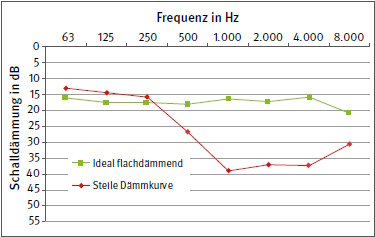
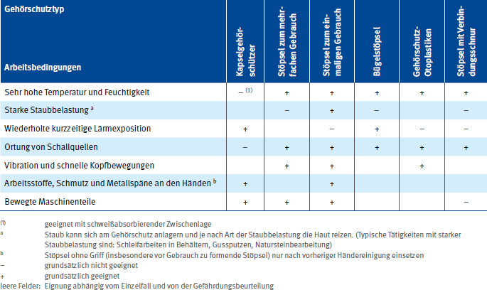

Bei der Auswahl von geeigneten Gehörschützern ist eine Vielzahl von Faktoren zu berücksichtigen. Neben der passenden Schalldämmung sind ergonomische sowie medizinische Aspekte relevant. Darüber hinaus ergeben sich aus der Arbeitsumgebung, in der der Gehörschutz genutzt werden soll, weitere Auswahlaspekte.
6.2.1 Allgemeines
Für die Auswahl und Bewertung nach der Schalldämmung ist zu berücksichtigen, dass
6.2.2 Einhaltung des maximal zulässigen Expositionswerts
Zur Einhaltung des maximal zulässigen Expositionswertes dürfen der Tages-Lärmexpositionspegel am Ohr der Benutzer und Benutzerinnen (unter Berücksichtigung der dämmenden Wirkung des Gehörschutzes) den Wert von 85 dB(A) und der Spitzenschalldruckpegel den Wert von 137 dB(C) nicht überschreiten. Das empfohlene Verfahren zur Überprüfung findet sich in Anhang 1.
6.2.3 Verfahren zur Auswahl
Die Schalldämmung von Gehörschützern ist in unterschiedlichem Maße frequenzabhängig (siehe Abbildung 10). Die Auswahlverfahren berücksichtigen diese Frequenzabhängigkeit. Sie erfordern unterschiedliche Informationen über die betreffenden Lärmsituationen. Bei der Auswahl wird die bei der Baumusterprüfung ermittelte Schalldämmung der Gehörschützer verwendet. Die Auswahlverfahren zur Ermittlung des beim Tragen des Gehörschützers am Ohr wirksamen Schalldruckpegels sind
Die genannten Verfahren (außer der SNR-Methode) werden im Anhang 2 näher beschrieben und durch Beispiele erläutert.
Siehe DIN EN 458 "Gehörschützer – Empfehlungen für Auswahl, Einsatz, Pflege und Instandhaltung – Leitfaden".
Die Oktavband-Methode ist ein genaues, aber sehr aufwendiges Verfahren, das die Kenntnis der einzelnen Oktavband-Schalldruckpegel erfordert. Es sollte angewendet werden, wenn im Einzelfall die Schutzwirkung möglichst genau zu bestimmen ist, z. B. durch Vorgaben im Rahmen einer arbeitsmedizinischen Vorsorge.
Die HML-Methode ist mit ihren drei für jeden Gehörschützertyp angegebenen Dämmwerten für hoch- (H), mittel- (M) und tieffrequente (L) Geräusche ein Auswahlverfahren, das die Frequenzabhängigkeit der Schalldämmung ebenfalls berücksichtigt. Als Information über das Geräusch am Arbeitsplatz müssen der A- und C-bewertete Schalldruckpegel bekannt sein. Diese Methode ist zu empfehlen, wenn keine Oktavband-Analyse vorliegt und trotzdem im Einzelfall die Schutzwirkung möglichst genau bestimmt werden soll.

Abb. 10 Beispiele für unterschiedliches Frequenzverhalten bei der Schalldämmung von Gehörschutz
Der HML-Check ist eine Kurzform der HML-Methode und wird in der betrieblichen Praxis am häufigsten angewendet. Er liefert im Allgemeinen ausreichende Ergebnisse, wenn keine zusätzlichen Informationen zur Frequenzzusammensetzung zur Verfügung stehen.
Die SNR-Methode verwendet einen einzigen Dämmwert (SNR-Wert). Dieser Wert charakterisiert als Einzahlkennwert die Schalldämmung nur grob, da die Frequenzzusammensetzung des Arbeitslärms nicht ausreichend berücksichtigt wird. Bei der Auswahlmethode erhält man den A-bewerteten Restschallpegel am Ohr durch Subtraktion des SNR-Wertes vom C-bewerteten Schalldruckpegel am Arbeitsplatz. Der SNR-Wert liegt durchschnittlich um 3 bis 4 dB über dem M-Wert. Zur Auswahl von Gehörschutz sind H-, M- und L-Werte besser geeignet.
Die Beurteilung der Schalldämmung eines Gehörschützers unter Berücksichtigung des C-bewerteten Spitzenschalldruckpegels LpC,peak nutzt einen modifizierten HML-Check. Bei tieffrequenten Impulsgeräuschen ist ein zusätzlicher Abschlag von 5 dB auf den Dämmwert zu berücksichtigen.
6.2.4 Verringerte Schalldämmung in der Praxis
Es ist allgemein anerkannt, dass die Schalldämmung aufgrund der Tragegewohnheiten der Benutzer und Benutzerinnen in der Praxis häufig geringer ist, als unter Laborbedingungen bei der Baumusterprüfung ermittelt wurde. Die Dämmwerte aus der Baumusterprüfung werden in der Benutzerinformation angegeben.
Um bei sachgerechter Benutzung dasselbe Schutzniveau wie bei qualifizierter Benutzung zu erreichen, ist ein statistisches Verfahren zur Abschätzung der Einhaltung der maximal zulässigen Expositionswerte anzuwenden. Dabei kommen Praxisabschläge Ks zum Einsatz. Dies bedeutet, dass der M- bzw. der L-Wert bei vor Gebrauch zu formenden Gehörschutzstöpseln um 9 dB und bei fertig geformten Stöpseln, Bügelstöpseln sowie Kapselgehörschützern um 5 dB zu verringern ist. Bei Gehörschutz-Otoplastiken ist aufgrund ihrer individuellen Anfertigung die Gefahr des falschen Einsetzens deutlich geringer als bei anderen Gehörschutzstöpseln. Für Gehörschutz-Otoplastiken ist daher ein Abschlag von 3 dB anzuwenden.
Die verringerte Schalldämmung in der Praxis bedeutet besonders für vor Gebrauch zu formende Gehörschutzstöpsel, dass nur sorgfältig ausgewählte und eingesetzte Stöpsel die von der Herstellfirma angegebene Schutzwirkung erreichen.
6.2.5 Auswahl bei qualifizierter Benutzung von Gehörschutz
Bei der qualifizierten Benutzung von Gehörschutz wird davon ausgegangen, dass der Gehörschutz die in der Baumusterprüfung ermittelte Schalldämmung auch in der Praxis erreicht. Voraussetzung dafür ist eine Unterweisung mit praktischen Übungen, welche mindestens viermal jährlich wiederholt werden.
Die Führungskraft stellt dabei sicher, dass die Benutzung entsprechend den Herstellerinformationen und die Unterweisung entsprechend den Vorgaben aus Anhang 5 erfolgen. Die Durchführung der Unterweisungen muss dokumentiert werden. Die qualifizierte Benutzung bietet die Möglichkeit, bei extrem hohen Schalldruckpegeln eine ausreichende Schutzwirkung zu erzielen. Nach TRLV Lärm sind an Arbeitsplätzen oder bei persönlicher Exposition ab einem Tages-Lärmexpositionspegel von LEX,8h = 110 dB(A) besondere Schutzmaßnahmen erforderlich, die eine qualifizierte Unterweisung und Benutzung von Gehörschutz einschließen.
6.2.6 Praxisabschläge bei Gehörschützern mit elektronischen Zusatzfunktionen
Bei pegelabhängig dämmendem Gehörschutz ist zu berücksichtigen, dass sich der Kriteriumspegel bei qualifizierter Benutzung entsprechend dem jeweiligen Praxisabschlag (Ks-Wert) zu höheren Pegeln verschiebt.
Bei Gehörschutz mit Kommunikationseinrichtung, Gehörschutz mit aktiver Geräuschkompensation und Gehörschutz zu Unterhaltungszwecken verschiebt sich der Einsatzbereich bei Durchführung einer qualifizierten Unterweisung (bzw. bei qualifizierter Benutzung) entsprechend den Praxisabschlägen ebenfalls zu höheren Pegeln.
6.2.7 Berücksichtigung einer möglichen Überprotektion
Wird die Schalldämmung eines Gehörschützers wesentlich höher ausgewählt, als zur Vermeidung eines Gehörschädigungsrisikos notwendig ist, werden die Sprachverständigung und das Erkennen von informationshaltigen Arbeitsgeräuschen sowie die Wahrnehmbarkeit von Warnsignalen unnötig erschwert. Die Folge kann Ablehnung des Gehörschützers sein, d. h. er wird gar nicht oder unsachgemäß getragen, um die Schalldämmung bewusst zu verringern. Das wiederum kann zu einer Unterprotektion mit einem am Ohr wirksamen Lärmexpositionspegel (Restschallpegel) von 85 dB(A) oder mehr führen. Überprotektion sollte grundsätzlich vermieden werden, kann jedoch, wenn von den Beschäftigten gewünscht, im Einzelfall zulässig sein. Auf mögliche Überprotektion ist zu prüfen, wenn der am Ohr wirksame Tages-Lärmexpositionspegel den Wert von 70 dB(A) unterschreitet (siehe Anhang 2, Tabelle 5).
Wenn Warnsignale, Warnrufe, informationshaltige Arbeitsgeräusche oder Kommunikation (z. B. Telefonieren in Lärmbereichen) am Arbeitsplatz von Bedeutung sind, ist Überprotektion unzulässig.
6.2.8 Kapselgehörschützer oder Gehörschutzstöpsel
Hinsichtlich der Schalldämmung sind beide Gehörschützerarten im Grundsatz gleichwertig, d. h. es gibt Gehörschutzstöpsel und Kapselgehörschützer mit verhältnismäßig hoher oder niedriger Schalldämmung. Kapselgehörschützer haben im Allgemeinen bei tiefen Frequenzen eine geringere Schalldämmung als Gehörschutzstöpsel. Ob Kapselgehörschützer oder Gehörschutzstöpsel auszuwählen sind, richtet sich daher nicht nach der Schalldämmung, sondern nach der Arbeitssituation und Arbeitsumgebung.
6.2.9 Kombination von Kapselgehörschützern und Gehörschutzstöpseln
Reicht an Arbeitsplätzen mit extrem hoher Lärmbelastung die Schalldämmung von Gehörschutzstöpseln oder Kapselgehörschützern allein nicht aus, kann deren Kombination erforderlich sein. Hierbei ist zu beachten, dass sich bei der Anwendung beider Gehörschützerarten die Schalldämmungen nicht einfach addieren. Eher werden für die Kombination die bei den verschiedenen Frequenzen höheren Schalldämmungswerte des einzelnen Gehörschützers zugrunde zu legen sein. Es sind daher nur geprüfte Kombinationen einzusetzen, deren Gesamtschalldämmung bekannt ist (siehe Anhang 12).
Anmerkung: Bei qualifizierter Benutzung liegt die maximale Einsatzgrenze derzeit für Gehörschutzstöpsel bei 121 dB(A) und für Kombinationen aus Gehörschutzstöpsel und Kapselgehörschutz bei 126 dB(A).
Müssen Praxisabschläge berücksichtigt werden, ist der M- bzw. L-Wert der Kombination um den für den verwendeten Gehörschutzstöpsel angegebenen Korrekturwert zu verringern.
Nach TRLV Lärm, Teil 3, ist ab einem Tages-Lärmexpositionspegel von 110 dB(A) eine qualifizierte Unterweisung und Benutzung zwingend vorgeschrieben.
Der Tragekomfort eines Gehörschützers entscheidet wesentlich über die Bereitschaft, Gehörschutz regelmäßig im Lärm zu tragen. Dies kann durch die Bereitstellung von verschiedenen Produkten, die Beteiligung der Beschäftigten bei der Auswahl und die Möglichkeit zu Trageversuchen unterstützt werden.
Bei Kapselgehörschützern können besonders das Material, das mit der Haut Kontakt hat, die Masse, die Andruckkraft und der Anpressdruck sowie die Einstellbarkeit für den von den Benutzern und Benutzerinnen empfundenen Tragekomfort ausschlaggebend sein. Außerdem ist die erforderliche Größe zu beachten. Die Mehrzahl der Kapselgehörschützer deckt alle bei der EU-Baumusterprüfung geforderten Größenbereiche (klein, mittel, groß) ab. Bei Kapselgehörschützern zur Helmmontage sollte dieser Aspekt schon bei der Auswahl beachtet und die Passform individuell überprüft werden.
| Hinweis |
| Kapselgehörschützer mit möglichst geringer Masse sind zu bevorzugen. Andruckkraft und Anpressdruck können nur durch individuelle Trageversuche bewertet werden. |
Bei Gehörschutzstöpseln kann neben dem verwendeten Material besonders die Leichtigkeit des Einsetzens und Herausnehmens ausschlaggebend sein. Außerdem sind die Größen nach der Weite der Gehörgänge auszuwählen.
Im Allgemeinen werden Gehörschutzstöpsel bei mehrstündigem Tragen angenehmer empfunden als Kapselgehörschützer.
Bei niedriger Umgebungstemperatur können Schaumstoffstöpsel zu hart werden. Vor dem Einsetzen ist dann ein Anwärmen erforderlich.
Eine zu hohe Schalldämmung ist aus ergonomischer Sicht meist negativ einzuschätzen, da sie die Benutzer und Benutzerinnen von Gehörschutz häufig mental belastet (Überprotektion, siehe Abschnitt 6.2.7). Je nach Arbeitsumgebung und individueller Empfindung kann eine rechnerisch zu hohe Schalldämmung aber auch von den Benutzern und Benutzerinnen gewünscht und aus Sicht des Arbeitsschutzes akzeptiert werden.
Tabelle 2 Empfehlungen zur Auswahl der einzelnen passiven Gehörschutz-Typen bezüglich der Arbeitsumgebung

6.4.1 Allgemeines
Bei der Auswahl der Gehörschützerarten ist die jeweilige Arbeitsumgebung zu berücksichtigen, und zwar
6.4.2 Kapselgehörschützer
Kapselgehörschützer sind zu empfehlen, wenn
Kapselgehörschützer erschweren die Ortung von Schallquellen. Ihr Einsatz sollte daher vermieden werden, wenn aus Sicherheitsgründen gutes Richtungshören erforderlich ist.
6.4.3 Kapselgehörschützer an Industrieschutzhelmen und anderen Kopf- und Gesichtsschutzausrüstungen
Insbesondere in Arbeitssituationen, in denen die gleichzeitige Benutzung von Schutzhandschuhen, Kopf- und Gehörschutz notwendig ist, sind am Schutzhelm montierte Kapselgehörschützer vorteilhaft. Die Handhabung von Gehörschutzkapseln ist in der Regel selbst mit Handschuhen problemlos möglich, während Stöpsel aufgrund ihrer geringen Größe schwer einzusetzen sind.
Es dürfen ausschließlich zugelassene Kombinationen, z. B. Kapselgehörschützer am Industrieschutzhelm, verwendet werden, da andernfalls die Schutzwirkung der Gehörschutzkapseln verringert werden kann. Angaben über die zulässigen Kombinationen enthalten die Anleitungen und Informationen der Herstellfirma. Eine verringerte Dämmwirkung ergibt sich beispielsweise durch einen zu geringen Anpressdruck der Kapsel-Dichtkissen am Kopf oder durch eine falsche Position der Kapseln und infolgedessen nicht vollständiges Umschließen der Ohren.
Weiterhin ist bei der Auswahl sicherzustellen, dass der Schutzhelm mit montierten Kapselgehörschützern bei Kopfbewegungen nicht verrutscht oder sogar herunterfällt, z. B. durch Verwendung eines Kinnriemens. Hierbei sind die höhere Masse der Helm-Kapsel-Kombination und der möglicherweise verschobene Schwerpunkt zu beachten.
6.4.4 Gehörschutzstöpsel
Gehörschutzstöpsel (insbesondere ohne Verbindungselement) sind zu empfehlen
Bügelstöpsel sind zu empfehlen, wenn ein häufiges Auf- und Absetzen erforderlich ist. Das Reiben des Bügels an der Kleidung etc. sollte vermieden werden, damit hierdurch keine störende Geräuschbelastung auftritt. Sie sollten nicht getragen werden, wenn Schalldruckspitzen durch Anstoßen der Bügel entstehen können, z. B. am Schweißerschutzschild.
Gehörschutzstöpsel mit Verbindungsschnur sind zu empfehlen, wenn ein Verlust der Stöpsel zu Produktionsstörungen führen kann. Sie dürfen nicht getragen werden, wenn in der Nähe bewegter Maschinenteile gearbeitet wird, z. B. an Drehmaschinen, Bohrmaschinen, Holzbearbeitungsmaschinen. Es besteht sonst die Gefahr, dass die Verbindungsschnur erfasst wird und so Verletzungen oder Schreckreaktionen durch Herausreißen eines Stöpsels aus dem Gehörgang möglich sind.
6.4.5 Gehörschutz-Otoplastiken
Gehörschutz-Otoplastiken sind zu empfehlen, wenn
6.4.6 Gehörschützer mit elektronischen Zusatzfunktionen
Gehörschützer mit pegelabhängiger Schalldämmung sind zu empfehlen, wenn
Gehörschützer mit Kommunikationseinrichtungen sind zu empfehlen bei
Gehörschützer mit aktiver Geräuschkompensation (ANR) sind dann sinnvoll einzusetzen, wenn zusätzliche Schalldämmung für tieffrequenten Schall erforderlich ist. Nicht als Gehörschutz zugelassene Produkte mit ANR und Kommunikationseinrichtung werden seit vielen Jahren von Piloten eingesetzt.
Gehörschützer mit Rundfunkempfänger (z. B. UKW-Radio) werden oft zu Unterhaltungszwecken an Arbeitsplätzen mit monotoner Tätigkeit in Lärmbereichen eingesetzt. Durch ihren Einsatz kann hier die Motivation der Beschäftigten positiv beeinflusst werden. Bei der Auswahl eines solchen Gehörschützers muss die zusätzliche Geräuschquelle durch das Radio berücksichtigt werden. Deshalb muss der nach Anhang 2 berechnete, am Ohr wirksame Schalldruckpegel des Geräusches am Arbeitsplatz beim Tragen des Gehörschützers unter 82 dB(A) liegen. Diese Gehörschützer dürfen nicht zu einem zusätzlichen Unfallrisiko führen und sind daher nicht geeignet für Arbeitsplätze, an denen eine Sprachverständigung oder das Erkennen informationshaltiger Arbeitsgeräusche erforderlich ist. Warnsignale müssen in jedem Fall sicher erkennbar sein. Im Zweifelsfall ist eine Hörprobe durchzuführen, zum Beispiel nach DIN EN ISO 7731.
6.5.1 Anwendungsfälle
Ein weiterer wichtiger Aspekt für die Eignung eines Gehörschützers ist die Hörbarkeit von Nutzschall aus der Umgebung. Aus praktischen Gründen unterscheidet man zwischen Sprache, Signalen und informationshaltigen Arbeitsgeräuschen. Bei der Auswahl eines Gehörschützers ist zu berücksichtigen, welche Art von Nutzschall in der jeweiligen Situation wahrgenommen werden muss.
Wenn keine speziellen Anforderungen an die Signalhörbarkeit nach Abschnitt 6.5.3 bestehen, ist für alle genannten Anwendungsfälle ein Gehörschutz mit flachem Frequenzgang, wie in Abschnitt 6.5.2 erläutert, zu empfehlen.
6.5.2 Flacher Frequenzgang
Ein flacher Frequenzgang ist definiert als ein Verlauf der Schalldämmung, der konstant (oder nahezu konstant) über die Frequenzen ist. Dadurch bleiben die Form des Spektrums und der Klangeindruck erhalten. Dies führt dazu, dass der Höreindruck beim Tragen von Gehörschutz nur wenig beeinflusst wird.
Im Anwendungsbereich dieser DGUV Regel wird ein Gehörschützer als flach schalldämmend bezeichnet, wenn er das Kriterium der Zusatzbemerkung W aus der IFA-Positivliste (siehe Anhang 12) erfüllt. Gehörschützer mit noch flacherem Frequenzgang erfüllen zusätzlich die Anforderungen für die Zusatzkennzeichnung X (extrem flachdämmend).
Das Kennzeichen W steht für das Hören von Warnsignalen, das Erkennen informationshaltiger Arbeitsgeräusche und die Verständlichkeit von Sprache. Die mittlere Steigung der Mittelwerte für die Oktavschalldämmung im Frequenzbereich von 125 bis 4000 Hz beträgt maximal 3,6 dB/Oktave. Dieses Kennzeichen berücksichtigt nicht die spezielle akustische Situation am jeweiligen Arbeitsplatz. Daher ist eine individuelle Hörprobe unter realistischen Bedingungen zur Absicherung nötig (siehe Abschnitt 7.8).
Sind die Anforderungen an die Sprachverständlichkeit und Erhalt des Klangeindrucks noch höher, sollten Gehörschützer mit einer noch flacheren Schalldämmkurve ausgewählt werden. Dies gilt z. B. für Musiker und Musikerinnen oder Personen mit Hörminderung. Hierfür dient das Kennzeichen X. Bei diesem Kennzeichen beträgt die mittlere Steigung der Mittelwerte für die Oktavschalldämmung im Frequenzbereich von 125 bis 4000 Hz maximal 2 dB/Oktave. Für diese Anforderungen ist auch die Differenz aus H- und L-Dämmwert ein Anhaltswert. Für Gehörschützer mit Kennzeichen X beträgt die Differenz im Allgemeinen nicht mehr als 7 dB.
6.5.3 Spezielle Arbeitsbereiche
Für bestimmte Arbeitsplätze existieren spezielle Anforderungen der jeweiligen Aufsichtsbehörden, die aus Sicherheitsgründen nur die Benutzung von speziell geeignetem Gehörschutz zulassen. Dies gilt für den Gleisoberbau (Kennzeichen S), für Personen, die Fahrzeuge im öffentlichen Straßenverkehr führen (Kennzeichen V) sowie für Personen, die Triebfahrzeuge führen oder mit Lokrangiertätigkeiten im Eisenbahnbetrieb betraut sind (Kennzeichen E1, E2 und E3). Für diese Arbeitsplätze ist die Auswahl eines Gehörschützers mit dem entsprechenden Kennzeichen aus der IFA-Positivliste und zusätzlich eine individuelle Hörprobe unter definierten Bedingungen erforderlich (siehe Abschnitt 7.7.3). Details finden sich in den entsprechenden Schriften der DGUV bzw. der zuständigen Unfallversicherungsträger.
6.5.4 Anteile der Gehörschützer mit Signalhörbarkeits-Kennzeichen
Es gibt deutliche Unterschiede zwischen den Gehörschutz-Typen (Kapselgehörschützer, Helm-Kapsel-Kombinationen, Gehörschutzstöpsel und Gehörschutz-Otoplastiken) in Bezug auf die Erreichung der einzelnen Signalhörbarkeits-Kennzeichen (siehe Tabelle 3).
Tabelle 3 Anteil der Gehörschützer mit Signalhörbarkeits-Kennzeichen, getrennt nach Gehörschutz-Typ
| Gehörschutz-Typ | Anzahl | Anteil in % | ||||
| W | X | S | V | E | ||
| Kapselgehörschutz | 188 | 14 | 1 | 9 | 3 | 3 |
| Helm-Kapsel-Kombinationen | 61 | 16 | 2 | 3 | 2 | 2 |
| Gehörschutzstöpsel (ohne Gehörschutz-Otoplastiken) | 227 | 89 | 41 | 62 | 46 | 72 |
| Gehörschutz-Otoplastiken | 491 | 70 | 26 | 49 | 31 | 58 |
Kapselgehörschützer und Helm-Kapsel-Kombinationen tragen das Kennzeichen W jeweils nur in ca. 15 % der Fälle. Alle anderen Kennzeichen werden nur von wenigen Kapselgehörschützern bzw. Helm-Kapsel-Kombinationen erreicht, die meist speziell auf Signalhörbarkeit optimiert wurden. Diese geringe Quote ist in dem meist steilen Frequenzverlauf der Schalldämmwerte begründet, der sich aus der Bauform der Kapseln ergibt.
Deutlich größere Anteile an Produkten mit Signalhörbarkeits-Kennzeichen ergeben sich für Gehörschutzstöpsel und Gehörschutz-Otoplastiken. Dabei liegen die Werte für Gehörschutzstöpsel durchweg höher als für Gehörschutz-Otoplastiken. Dies ergibt sich aus den oft steilen Dämmkurven von Gehörschutz-Otoplastiken mit akustischen Filtern, die eine Bohrung aufweisen.
Aus dieser Übersicht wird deutlich, in welchen Produktgruppen die meisten für bestimmte Signalhörbarkeitsanforderungen geeigneten Produkte zu finden sind. Dies kann bei der generellen Beschaffung von Gehörschutz im jeweiligen Unternehmen berücksichtigt werden.
6.6 Medizinische Auffälligkeiten
Die Benutzer und Benutzerinnen von Gehörschützern sind vor der ersten Anwendung nach bestehenden Ohrproblemen, z. B. Gehörgangsreizungen und einer eventuellen ärztlichen Behandlung, zu befragen. In derartigen Fällen ist vor der Benutzung eine ärztliche Beratung zur Auswahl der Gehörschützer einzuholen. Eine ärztliche Beratung zur Auswahl von Gehörschützern ist Bestandteil jeder arbeitsmedizinischen Vorsorge Lärm nach der Empfehlung "Lärm".
Siehe auch DGUV Information 212-823 "Ärztliche Beratung zum Gehörschutz".
6.7.1 Personen mit Hörminderung
Damit sich ein geschädigtes Gehör nicht zusätzlich verschlechtert, darf es nicht weiter durch Lärm belastet werden. Daher muss für diesen Personenkreis die Auswahl eines Gehörschützers besonders sorgfältig erfolgen. Zur Auswahl sollte grundsätzlich die Oktavband-Methode oder, falls dies nicht möglich ist, die HML-Methode verwendet werden (siehe Anhang 2). Besonders wichtig ist, dass
Der Gehörschutz ist nach TRLV Lärm bei anerkanntem Innenohrschaden konsequent ab einem Tages-Lärmexpositionspegel von 80 dB(A) zu tragen.
Siehe auch DGUV Information 212-686 "Gehörschutz-Kurzinformation für Personen mit Hörverlust".
6.7.2 Personen mit Tinnitus
Da Lärmschwerhörigkeit und Tinnitus häufig gleichzeitig festgestellt werden, sollten Personen mit Tinnitus besonders vor weiterer Lärmexposition geschützt werden. Ein konsequentes Benutzen von Gehörschutz ist dabei von großer Bedeutung. Da der Arbeitslärm den Tinnitus oft verdeckt (d. h. nicht mehr wahrnehmbar macht), besteht die Gefahr, dass der Gehörschutz gezielt nicht sachgerecht benutzt wird. Die daraus resultierenden und beabsichtigten Leckagen reduzieren die Schalldämmung oft so stark, dass die Schutzwirkung dabei verloren geht. Die Auswahl des geeigneten Gehörschutzes sollte deshalb besonders sorgfältig erfolgen, wobei Gehörschutz mit niedriger Schalldämmung oder mit eingebautem Radiogerät (sofern keine Sicherheitsaspekte dagegensprechen) zum Verdecken des Tinnitus genutzt werden kann.
6.7.3 Personen mit Hyperakusis
Bei lärmbedingter Hörminderung tritt häufig neben Tinnitus auch Hyperakusis auf. Diese Schallüberempfindlichkeit hat zur Folge, dass bei angehobener Hörschwelle gleichzeitig die Grenze zum unangenehmen oder sogar schmerzhaften Lärm schon bei ungewöhnlich niedrigen Schalldruckpegeln überschritten und damit der Pegelbereich des akzeptablen Hörens verkleinert wird.
Der verwendete Gehörschutz muss in seiner Schalldämmung daher genau auf das Hörempfinden der Benutzer und Benutzerinnen abgestimmt sein. Deswegen sollte die Gehörschutzauswahl gemeinsam mit der betroffenen Person durchgeführt werden. Es ist angeraten, Hör- bzw. Trageversuche durchzuführen.
Es ist auch möglich, dass Personen mit Hyperakusis für verschiedene Arbeitssituationen unterschiedliche Gehörschützer benötigen.
Bei der Auswahl von Gehörschutz gegen Impulslärm muss berücksichtigt werden, dass dabei unterschiedliche Anwendungsfälle auftreten. Es sollten folgende Lärmsituationen unterschieden werden:
Im Fall 1 sollte üblicher Gehörschutz verwendet werden, der in seiner Schalldämmung an den jeweiligen LEX,8h angepasst wird und ganz analog zu Gehörschutz für impulsfreien Lärm ausgewählt wird. Wenn die Auslösewerte für die Spitzenschalldruckpegel überschritten sind, ist auch für diese Größe die Einhaltung des maximal zulässigen Expositionspegels zu prüfen (siehe Anhang 1 bzw. Anhang 2). Im Normalfall ist aber der Tages-Lärmexpositionspegel das schärfere Kriterium.
Im Fall 2 erscheint pegelabhängig dämmender Gehörschutz mit ausreichender passiver Dämmung geeignet. Zum einen müssen die Impulse ausreichend gedämmt werden, zum anderen ist in den Phasen niedriger Lärmexposition eine ausreichende Hör- und Kommunikationsfähigkeit sicherzustellen. Es kann davon ausgegangen werden, dass der Gehörschützer sich während der Impulse wie ein passives Produkt verhält. Daher muss die Beurteilung der Eignung eines Produkts (Einhaltung des maximal zulässigen Expositionswerts für den Spitzenschalldruckpegel) anhand der passiven Dämmwerte (M- oder L-Wert) erfolgen. In diesem Fall ist der Kriteriumspegel nicht ausschlaggebend, weil der Tages-Lärmexpositionspegel so niedrig liegt.
Beim Vorkommen extrem hoher Schalldruckpegel (Fall 3) muss der Gehörschutz eine Schädigung durch den Einzelimpuls verhindern. Deshalb sollte er insbesondere unter Berücksichtigung des Spitzenschalldruckpegels ausgewählt werden. Der Restschallpegel am Ohr darf den Wert von 137 dB(C) nicht überschreiten. Möglicherweise muss eine Kombination aus Gehörschutzstöpseln und Kapselgehörschutz verwendet werden. Insbesondere beim gleichzeitigen Tragen von Kapselgehörschutz und Schutzbrillen ist die mögliche Leckage an den Dichtungskissen durch die Brillenbügel zu berücksichtigen. Im polizeilichen Bereich stehen spezielle Gehörschutzstöpsel mit Impulsfiltern zur Verfügung, wobei die Dämmwirkung erst bei Spitzenschalldruckpegeln ab ca. 150 dB(C) signifikante Werte annimmt. Diese Produkte sind jedoch meist nicht für den Einsatz im Wirkungsbereich der PSA-Verordnung (EU) 2016/425 geprüft und als Gehörschutz zugelassen.
Infraschall (ca. 1-16 Hz) und tieffrequenter Hörschall (16-140 Hz) sind zwei Schallarten, die im Spektrum nebeneinander liegen und mit dem Begriff tieffrequenter Schall zusammengefasst werden können.
Wenn Maschinen oder Apparate tieffrequente Emissionen erzeugen, dann meist im Frequenzbereich 2-140 Hz.
Infraschall kann man zwar nicht hören (i.S. von Beurteilung von Tonhöhe/Lautstärke), aber bei stärkeren Signalen über der Wahrnehmungsschwelle zumindest spüren, und zwar als Pulsationen, Schwebungen, Vibrationen oder Wechseldruckgefühl. Betroffene klagen meist über Ohrdruck und Unsicherheits-/Angstgefühle. Sekundäreffekte wie Gebäudevibrationen, Scheppern von Teilen der Inneneinrichtung etc. können ebenfalls Unsicherheitsgefühle auslösen.
Die ASR (Technische Regeln für Arbeitsstätten) A3.7 nimmt auch auf tieffrequente Geräuscheinwirkungen Bezug. Hier ist in Abschnitt 3.17 tieffrequenter Schall als "Schall mit dominierenden Energieanteilen im Frequenzbereich unter 100 Hz" definiert, also einschließlich Infraschall. Es werden Folgen von extra-auralen Lärmwirkungen beschrieben und das Vorgehen zum Schutz der Beschäftigten konkretisiert. Mit extra-auralen Lärmwirkungen sind die nicht gehörschädigenden Wirkungen gemeint. Sie äußern sich über psychische und körperliche Symptome sowie Leistungsminderung und eine erhöhte Unfallgefahr. Extra-aurale Lärmwirkungen hängen nicht nur vom Schalldruckpegel ab.
Besteht eine begründete Möglichkeit der Einwirkung tieffrequenter Lärmanteile, sind zunächst (ergänzend zu Messungen nach LärmVibrationsArbSchV) spezielle Messungen in diesem Frequenzbereich durchzuführen. Weitere Erkenntnisse dazu kann eine Terzanalyse nach Abschnitt 7.6 der ASR A3.7 liefern.
Tieffrequenter SchalI wird durch Dämmmaterial kaum gemindert, auch hochdämmende passive Kapselgehörschützer haben in diesem Frequenzbereich praktisch keine Schutzwirkung. Gehörschützer mit aktiver Geräuschkompensation können je nach Produkt und Geräuschumgebung auch bei tieffrequentem Schall wirksam sein. Maßnahmen zum Schutz der Beschäftigten sollten in jedem Fall an der Geräuschquelle ansetzen. Die Verlagerung ortsfester Arbeitsplätze kann dennoch häufig die einzige Lösung sein.
Der Ultraschall beginnt bei einer Frequenz von 16 kHz und schließt damit direkt an den Hörschall (16 Hz bis 16 kHz) an. In der industriellen Produktion werden heute in vielen Bereichen Ultraschalltechnologien eingesetzt. Typische Anwendungsbereiche hierfür sind das Reinigen, Schweißen, Bohren und Schneiden. An Arbeitsplätzen, die in direkter Verbindung zu derartigen Ultraschallquellen stehen, sind Beschäftigte neben Geräuschen im Hörfrequenzbereich auch Schallimmissionen im Ultraschallbereich ausgesetzt. Der eigentliche Ultraschall ist nicht hörbar. Oftmals kommt es aber bei den Ultraschallquellen zu subharmonischen Schwingungen, die bei der halben Arbeitsfrequenz der Quelle liegen und damit im Frequenzbereich von 8 kHz bis 16 kHz unangenehme hochfrequente Geräusche erzeugen. Durch Ultraschall können individuelle Effekte wie z. B. Kopfschmerzen, Übelkeit, Tinnitus, Druckgefühl auf den Ohren und Ermüdung entstehen. Hörverluste durch Ultraschalleinwirkungen werden derzeit zumindest für den Sprachfrequenzbereich (100 Hz bis 8 kHz) ausgeschlossen.
Konkrete Regelungen zum Schutz gegen Ultraschall gibt es derzeit noch nicht. In der Lärm- und Vibrations-Arbeitsschutzverordnung und auch in der Arbeitsstättenregel ASR A3.7 "Lärm" wird der Lärm definiert als jeder Schall, der zu einer Beeinträchtigung des Hörvermögens oder zu einer sonstigen mittelbaren oder unmittelbaren Gefährdung von Sicherheit und Gesundheit der Beschäftigten führen kann. In der Konkretisierung schließen die Technischen Regeln zur Lärm- und Vibrations-Arbeitsschutzverordnung ihre Gültigkeit jedoch für den Ultraschall aus und die Arbeitsstättenregel ASR A3.7 "Lärm" beinhaltet aktuell keine Regelungen für den Ultraschall.
Hinsichtlich der Frage nach geeignetem Gehörschutz an Arbeitsplätzen mit Ultraschalleinwirkungen besteht die Problematik, dass im Rahmen der Baumusterprüfung die Dämmwirkung für Frequenzen oberhalb von 8 kHz nicht ermittelt und dokumentiert wird. Es ist davon auszugehen, dass die Gehörschützer bei korrekter Anwendung im Hochton- und Ultraschallfrequenzbereich zumindest die für hochfrequente Geräusche (H-Wert) ermittelten Schalldämmwerte erreichen.
Kommen verschiedene PSA zum Einsatz, deren Kombinierbarkeit bei der Zulassung nicht geprüft wird, muss die Beurteilung der Eignung der Kombination bei der Gefährdungsbeurteilung im Betrieb erfolgen. Die Schutzausrüstungen sind so aufeinander abzustimmen, dass die Schutzwirkung der einzelnen Ausrüstungen nicht beeinträchtigt wird. Gleichzeitig sind auch ergonomische Aspekte zu berücksichtigen (siehe Abschnitt 6.3).
Beim Einsatz anderer Schutzausrüstungen bzw. Ausrüstungen am Kopf (z. B. Visier, Schutzbrille oder Atemschutz) ist darauf zu achten, dass
Es sind daher Gehörschutzstöpsel zu bevorzugen.
Bei der Kombination von Brillen oder Schutzbrillen mit Kapselgehörschützern ist zu beachten, dass diese mit breiten und weichen Dichtungskissen ausgestattet sind und die Brillenbügel möglichst flach sind.
Die Kombination von Anstoßkappen mit Kapselgehörschützern ist im Allgemeinen nicht möglich, da die Kapsel am Rand der Anstoßkappe nicht dicht aufliegen kann. Andere Kopfschutzausrüstungen können mit Kapselgehörschützern mit Nacken- oder Kinnbügel kombiniert werden, wenn ausreichend Auflagefläche für die Dichtungskissen vorhanden ist und der Bügel des Kapselgehörschützers genügend Freiraum hat.
Vor der Entscheidung für den Einsatz eines bestimmten Gehörschützers sollten im Betrieb Trageversuche mit einer kleinen Gruppe von Beschäftigten durchgeführt werden. Dabei werden in der Praxis die individuellen Arbeitsbedingungen, z. B. Staub, Hitze, starke Körperbewegungen, Tragen anderer persönlicher Schutzausrüstungen oder Signalhören, ebenfalls erfasst. Es wird empfohlen, dass sich auch die im Betrieb für den Einsatz von Gehörschützern Verantwortlichen an diesen Trageversuchen beteiligen.